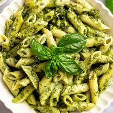

Double Chocolate Cookies
Origin: Michigan Source: Family Recipe Category: Dessert
My daughter learned to make these cookies at a baking camp at Zingermanns and has tweaked the recipe to fit the taste buds of her siblings. They are extremely sugary so the salt helps to balance it. Note, these cookies are best eaten very quickly.
Recipe Ingredients
- Unsalted butter
- Granulated Sugar
- Packed light or dark brown sugar
- Large egg
- Pure vanilla extract
- Semi-sweet chocolate chunks (melted)
- All-purpose flour
- Natural unsweetened cocoa powder
- Baking soda
- Salt
- Semi-sweet chocolate chunks
Recipe Steps
- In a mixing bowl cream together the butter, granulated sugar, and brown sugar
- Add the egg and vanilla extract and beat well
- Add the melted chocolate
- In a separate bowl combine the flour, baking soda, cocoa powder and salt
- Combine the wet and dry ingredients
- Add the unmelted chocolate chunks.
- Form 15 cookies and place on a baking sheet.
- Cook for 12 to 13 minutes at 350 degrees.
Additional Food images


Peanut Butter and Jelly Sandwich
Origin: American Source: Alex Likens Category: Main Dish
This is a dish that is great at all times of year. Its mix of savory flavors with sweet jelly makes it a favorite dish for many people. This dish is great for any situation whether you are on the go, in a rush, or just looking for a tasty meal in your home.
Recipe Ingredients
- Bread
- Peanut Butter
- Jelly
Recipe Steps
- Take two pieces of bread and place them on a plate
- Put a thick layer of jelly on one piece of the bread
- Put a thick layer of peanut butter on the other piece of bread
- Put the two pieces of bread together so they face each other
Additional Food images


Pesto Pasta
Origin: Italian Source: Elena Elkin Category: Main Dish Pesto pasta has always been a comfort dish for me; it's quick, it's easy, and great food for a dinner party or a comfy night in! It requires six main ingredients, plus additional spices as you see fit. If you're not in the mood for pasta, you can always eat the pesto sauce on bread, crackers, or eggs! This recipe makes enough for around 4 people, so adjust accordingly.
Recipe Ingredients
- 2 cups fresh basil leaves, packed (can add some spinach if you don't have enough basil leaves)
- ¾ cup freshly grated Parmesan or Romano cheese
- ½ cup extra virgin olive oil
- ⅓ cup pine nuts (can sub with same amount of chopped walnuts)
- 3 cloves garlic, minced
- Salt & pepper to taste
- 8 oz of your choice of pasta (my preferred is penne, but any type will work)
Recipe Steps
- Heat up water in a pot for the pasta and put in a teaspoon of salt
- Pulse the basil and pine nuts in a food processor. Add a bit of olive oil as needed if the ingredients are too dry
- Add the garlic and cheese to the food processor.
- Once water starts boiling in the pot, add pasta. Stir every couple of minutes
- While the food processor is running, slowly pour in olive oil
- Once pasta is al-dente, turn off the heat and drain the pasta water. Save some of it if you want your pesto to be slightly thinner
- Add the pasta back into the pot, mix in the pesto, and voila!
Additional Food images